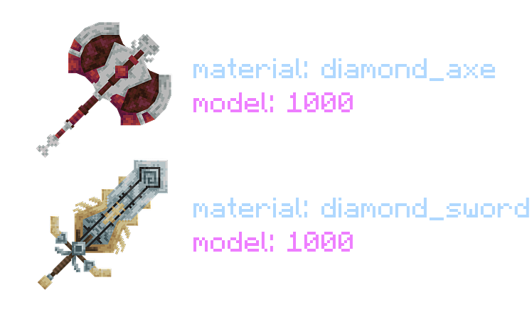
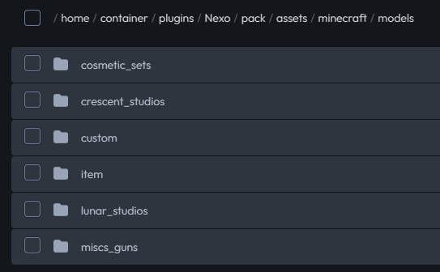

Having custom 3D models on your server is probably the reason you decided to have a resource pack in the first place! There's a simple diagram I like to show to everyone who I teach how this system works.
Item Config → Model → Texture

Config (.yml)
Model (.json)

Texture (.png)
You can think of functioning 3D models like a chain of assets pointing to each other. For advanced developers, picture a singly-linked-list. The configuration of an item points to the model that is associated with this item, and the model then points to the texture that the item should use.
ravagers_axe:
material: DIAMOND_AXE
itemname: ravagers_axe
Pack:
custom_model_data: 10000
model: ravager_models/ravagers_axe # PAY ATTENTION TO THIS!
- `ravagers_axe` is the ID of the item. Every item has its own, unique ID.
- The base item, or `material:` that this axe is using is a Diamond Axe.
- The display name, or `itemname:`, of this item is just "Ravager's Axe".
- In terms of the pack, it's custom-model-data is being assigned to the number 10,000. I will elaborate on what this is very shortly.
- The model path is being assigned to a .json file located in the directory ravager_models/ravagers_axe. Here it is:
{
"credit": "Made with Blockbench",
"texture_size": [64, 64],
"textures": {
"1": "ravager_textures/ravagers_axe", # PAY ATTENTION TO THIS!
"particle": "ravager_textures/ravagers_axe" # PAY ATTENTION TO THIS!
},
"elements": [
/* ... Model elements and the rest of your file. */
]
}
And since the model is pointing to a texture in the above directory, I'd place my texture in:
Nexo/pack/assets/minecraft/textures/ravager_textures/ravagers_axe.png
Before we move on, let's talk about what custom-model-data actually is.
Just like how each and every custom item needs its own ID, each and every model needs its own model-data!
This model-data can be ANY number (within Java's limitations, of course), so with all of the possible `material`s you can use alongside all of the possible custom-model-data's you can use, you can have pretty much an UNLIMITED supply of custom items!
If you choose to create your configuration without specifying a custom-model-data, Nexo will automatically provide one for you once you reload the plugin.
You CAN re-use the same custom-model-data on two different items, as long as they are two different `materials`. A `PAPER` with custom-model-data 1,000 is different from a `FEATHER` with custom-model-data 1,000.
If you're using the same custom-model-data on two models that also share the same `material`, they'll both show the same model. This is useful for when you want to create two or more different items with different lore and names, but you want them both to share the same model.
Nexo is intuitive. Everything is where it makes sense to be.
Inside of Nexo/pack/assets, you have the option to create your own folder (these are called namespaces), or use the regular Minecraft one.
If you create your own one, you'll need to specify this in your item configurations with a colon.
model: ravager:ravager_models/ravagers_axe
model: ravager_models/ravagers_axe
Inside of any namespace folder, you'll have your `models` and `textures` folders, as well as other things of your choosing.
Once you're inside of the `models` or `textures` folders, the rest of the organization is pretty much all up to you!
You can create whatever sub-directories you'd like and organize your files however you see fit!

As you can see, simpler than expected. If there's something I missed or you think is confusing, reach out to me on Discord!